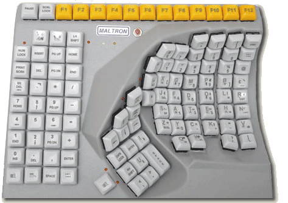

Accueil | Bénéfices Technique | Bénéfices Commerciaux | Bénéfices juridiques | Bénéfices en terme d'image |
>> Bénéfices techniques

Les bénéfices techniques liés à la mise en oeuvre de l'accessibilité sont nombreux.
- La séparation du fond (le contenu) et de la forme (le graphisme)
offre une baisse substantielle des coûts de bande passante.
Les gains se situent généralement entre 15% et 30% et peuvent
aller jusqu'à 55%.
- Le fond étant séparé de la forme, la maintenance du
contenu n'est plus parasitée par des considérations graphiques.
On assiste aussi à une séparation des métiers (graphiste
/ intégrateur / rédacteur) qui amène à des gains
de productivité. Par ailleurs, le debuggage est plus rapide. Le chef
de projet observe ainsi une baisse des coûts de maintenance.
- La mise en oeuvre de l'accessibilité permet de prendre en compte simplement les différentes configurations techniques:
- différences de taille d'écran: du smallscreen au 21pouces
- différences de média: écran, papier, projecteur,
téléphone 3G, PDA
- différences de navigateurs: plus besoin de maintenir deux versions
d'un même site, une seule suffit
- différences de bande passante: du RTC à la
liaison spécialisée en passant par l'ADSL
On constate donc une baisse des coûts de développement.